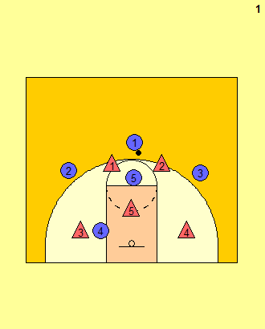

|
1-3-1
|
|
Overload
|
|

1)
We will use a 1-3-1 against a 2-3 zone.
2) If 1 raises his right hand (regardless of what he yells out), the play is overload with the right wing running to the left corner. If he raises his left hand, the play is overload with the left wing runningn to the opposite corner. Here, we show what happens when he raises his right hand. 5 follows the ball in the high post. 4 follows the ball in the low post. 3) 1 passes the ball to 3 and 2 begins his journey to the opposite corner. He must run BEHIND the defenders so that they don't detect him. 4) 5 moves to the high post. 4 moves to the low post and occupies the wing defender by posting and calling for the ball. 3 should look to pass the ball to 4 if he is open. 2 continues his cut. 5) If the pass to the low post is not available, 3 must BE PATIENT. He should wait for 2 to get to the corner for an open 3 pointer. 4 should continue to fight for position to occupy the defender. 3 should continue to look to pass the ball into 4 (maybe even faking the pass). This will create space for the shot in the corner. 6) The pass is passed to 2 and the three pointer may be taken. 7) If the shot is defended, there may be a good chance to make an entry pass to the low block to 4 who should continue to establish post position. Otherwise the ball should be swung quickly back to 3. 2 should not hold onto the ball because he may get trapped in the corner. When the ball is passed back to 3, he can look to swing quickly to 1 for a shot or dribble back to the center to reset. |
|
Created with Basketball Playbook
from Jes-Soft
|